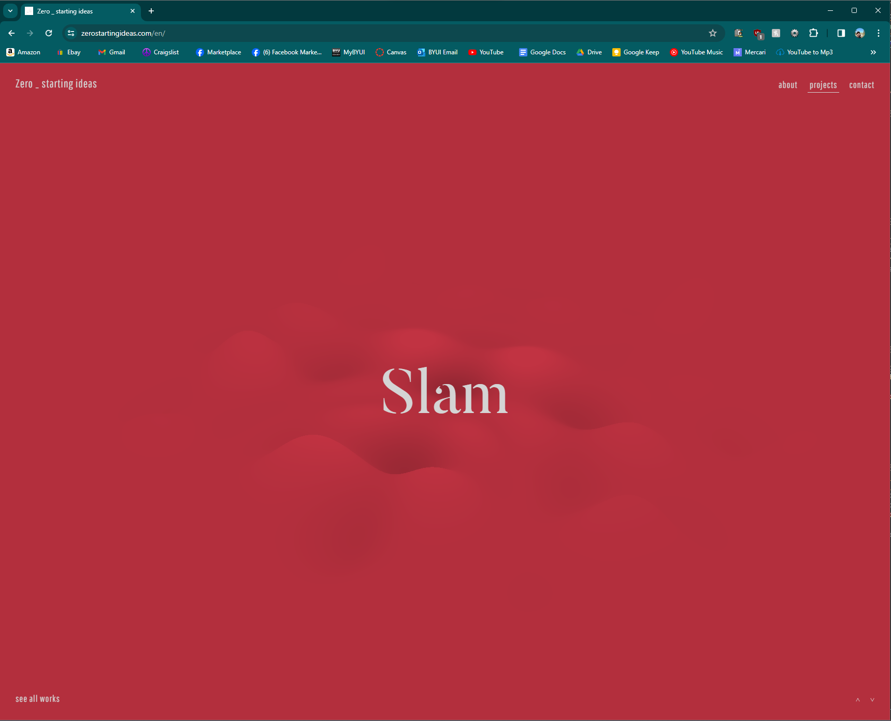

Rule of Thirds
Breitling
https://www.breitling.com/us-en/The Breitling website does a great job of utilizing the rule of thirds. If you follow along the top horizontal line, you're met with an array of their newest watches. From there, your eyes follow straight down to where they list links for promotions and other information along the second horizontal line.
White Space
Apple
https://www.apple.com/macbook-air/?ref=land-book.comApple pioneered the use of white space for attracting attention to their products- their whole image reflects it. Apple is the champion of minimalism and they use clean lines and white accents to carry that out. Their products, their packagings, even their stores don a white, clean look. In UX, this helps the customer to focus on nothing but their product.
Hick's Law
Zero
https://zerostartingideas.com/en/ I just discovered this website while I was doing this assignment, but I think it's one of my new favorite websites. It perfectly embodies Hick's Law. The website presents you with one option, right in the center of your screen. If you wish to look at other options, all you have to do is scroll up or down. This will animate the screen, changing the background color and offering you a new idea. You can then click on that idea and scroll down, reading all about the idea that you've chosen. It makes it very easy to make a decision, because there is only one possible decision on your screen at a time!